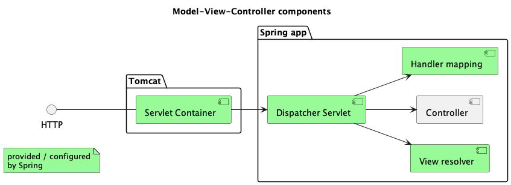

Creating an elementary spring web app and deplying it in a Multipass Docker enviroment.
1 Review the structure of a static spring web app

2 Create the spring web app
2.1 Create spring project with spring initializr
Navigate to https:start.spring.io and select fowllowing options:
- Project: Maven Project
- Language: Java
- Spring Boot: 2.7.1
- Project Metadata:
- Artifact: "springboot_ elementary"
- Descripton: "Elementary project for Spring Boot"
- Packaging: Jar
- Java 11
- Dependencies: Spring Web
Use "GENERATE" button to download an archive with the new project. Unzip the archive and move "springboot_ elementary" folder to a development area.
Open the new project with IntelliJ and let dependencies to be downloaded. Specify run configuration with application name and main class through Run -> Run... menu as follows.
Now you can build and run the app using IntelliJ, for example using Run -> Run or Build -> Build Project menus.
2.2 Add HomeController class
Create a new package controllers under com.example.springboot_elementary folder. Add HomeController class in this package as follows.
@Controller public class HomeController { @GetMapping("/") public String home() { return "home.html"; } }
2.3 Add static home.html
Create a new home.html file under src/main/resources/static folder as follows.
<!DOCTYPE html> <html lang="en" xmlns="http://www.w3.org/1999/xhtml"> <head> <meta charset="UTF-8"> <title>Spring web app</title> </head> <body> <h2>Home page for the Spring web app...</h2> </body> </html>
2.4 Add HomeControllerTest class
Create a new package controllers under src/test/java/com.example.springboot_elementary folder. Add HomeControllerTest class as follows.
// additional static imports for MockMvc methods import static org.springframework.test.web.servlet.request.MockMvcRequestBuilders.get; import static org.springframework.test.web.servlet.result.MockMvcResultMatchers.*; @WebMvcTest(HomeController.class) public class HomeControllerTest { @Autowired private MockMvc mockMvc; @Test public void testHomePage() throws Exception { mockMvc.perform(get("/")) .andExpect(status().isOk()) .andExpect(view().name("home.html")); } }
2.5 Run the app locally
Now you can build and run the app with the final project strcuture as follows.
Run the app with IntelliJ using Run -> Run 'springboot_ elementary' menu. Open a browser and navigate to localhost:8080 to validate that the app is up and running as in the example below.
3 Deploy the app as a Docker container locally
3.1 Update pom.xml
Add image configuration to spring-boot-maven-plugin in pom.xml, and re-Load Maven Changes as follows.
<build> <plugins> <plugin> <groupId>org.springframework.boot</groupId> <artifactId>spring-boot-maven-plugin</artifactId> <configuration> <image> <name>${project.artifactId}:${project.version}</name> </image> </configuration> </plugin> </plugins> </build>
3.2 Create a Docker image
Launch Docker Desktop app on your mac.
Switch to Terminal panel in IntelliJ through View -> Tool Windows -> Terminal. Run image building script as follows.
% ./mvnw spring-boot:build-image
Check that the docker image has been created.
% docker image list springboot_elementary REPOSITORY TAG IMAGE ID CREATED SIZE springboot_elementary 0.0.1-SNAPSHOT d24fd8f3e812 42 years ago 262MB
Note: on the question of '42 year ago' refer here https://buildpacks.io/docs/features/reproducibility/
3.3 Run the app as a local docker container
Run the newly create docker image as follows.
% docker run -p8090:8080 springboot_elementary:0.0.1-SNAPSHOT
Note: use Ctrl-C to stop the process inside Terminal tab.
Validate the app is up and running by navigating to localhost:8090 address in your browser.
4 Deploy the app as a Multipass Docker container
4.1 Create Multipass Docker instance
Launch Multipass VM with a Docker instance using the following command inside Terminal tab.
% multipass launch docker
Check the running docker instance by running the followoing command.
% multipass info docker
Name: docker
State: Running
IPv4: 192.168.64.3
172.17.0.1
Release: Ubuntu 21.10
Image hash: d5ebdea3522c (Ubuntu 21.10)
Load: 0.26 0.62 0.33
Disk usage: 2.4G out of 38.6G
Memory usage: 210.7M out of 3.8G
Mounts: --
4.2 Copy docker image to Multipass Docker instance
Create a tar archive of the docker image from local Desktop Docker instance by running the following command.
% docker save -o springboot_elementary.tar springboot_elementary
Check that the image archive has been created.
% ls *.tar springboot_elementary.tar
Transfer the archive to Multipass Docker instance as follows.
% multipass transfer springboot_elementary.tar docker:/home/ubuntu/springboot_elementary.tar
Check if the file has been trasferred to a home directory of the multipass docker instance.
% multipass exec docker ls springboot_elementary.tar
4.3 Run the app as a Multipass Docker container
Open command line inside Multupass Docker image with the following command.
% multipass shell docker ubuntu@docker:~$
Note: to exit from the multipass instance shell and return back to IntelliJ Terminal use exit command.
Create a docker image from the archive as follows.
ubuntu@docker:~$ docker load -i springboot_elementary.tar
Check that the image has been created.
ubuntu@docker:~$ docker image list REPOSITORY TAG IMAGE ID CREATED SIZE portainer/portainer-ce latest 7b6e59279c38 6 weeks ago 275MB springboot_elementary 0.0.1-SNAPSHOT d24fd8f3e812 42 years ago 262MB
Now you can run the spring web app as a container inside Multipass VM.
ubuntu@docker:~$ docker run -p8085:8080 springboot_elementary:0.0.1-SNAPSHOT
Note: use Ctrl-C to stop the process inside the terminal.
Navigate browser to the 192.168.64.3:8085 address to validate that the web app is up and running.